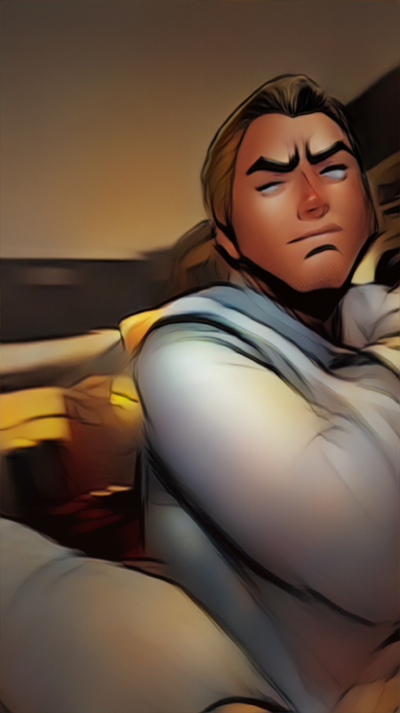

About us
Vi introducerar Bärsaloppet, ett unikt socialt lopp där deltagare kan njuta av rörelse, gemenskap och god stämning samtidigt som man får visa vad man verkligen går för. Fem kilometer, fem stationer samt en öl vid varje station. Första man eller kvinna i mål vinner.

Bilden visar sista boss av Bärsaloppet.
Tillbaka till startsidan